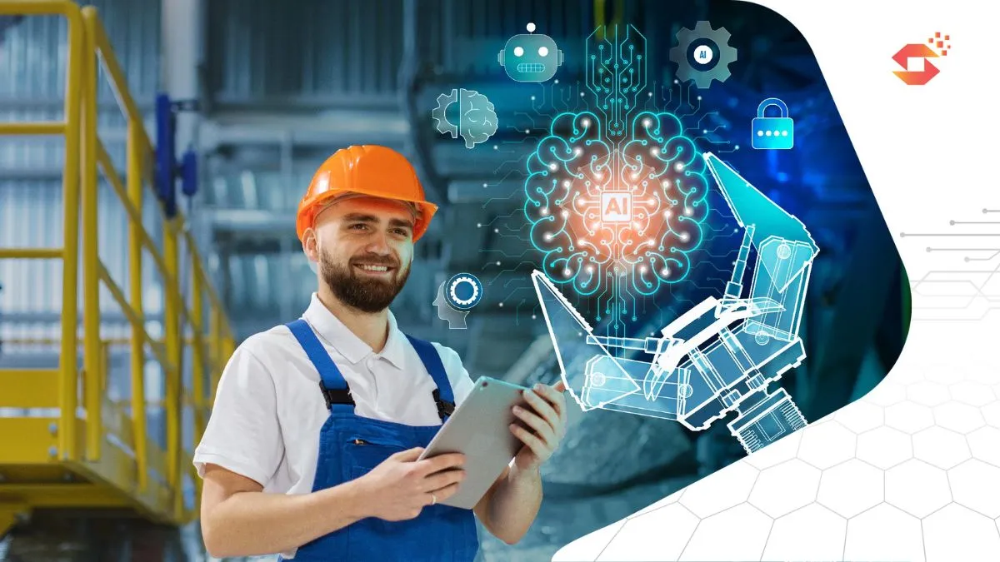

Revolusi Industri 5.0 (Prediksi)
Hingga saat ini, kita sudah melihat adanya revolusi industri 1.0 yang ditandai dengan adanya era kebangkitan mesin, revolusi industri 2.0 yang ditandai dengan adanya era kebangkitan transportasi atau otomasi, revolusi industri 3.0 yang ditandai dengan adanya era kebangkitan dari komputer atau komputasi, revolusi industri 4.0 yang ditandai dengan adanya era kebangkitan internet. Diperkirakan oleh negara Jepang yang mengumumkan akan kemungkinannya revolusi konsep industri 5.0 yang disebut sebagai era kebangkitan society. Konsep yang diusung pada industri 5.0 ini sendiri akan lebih fokus terhadap kombinasi antara pendayagunaan antara berbagai aspek, seperti manusia, data, serta teknologi. Walaupun memiliki kemiripan dengan era revolusi sebelumnya, namun kedua era ini sama sekali berbeda berdasarkan fokusnya. Pada revolusi industri 4.0 yang memiliki fokus ke efektivitas produksi dan sedangkan revolusi industri 5.0 ditunjukkan lebih berfokus kepada kesejahteraan masyarakat secara keseluruhan. Hal ini sendiri dapat kita lihat contohnya yang sudah ada di negara Indonesia, salah satu perusahaan yang sudah siap untuk menghadapi era revolusi industri 5.0 ini adalah perusahaan pelayanan seperti ojek online maupun perusahaan penggalangan dana.
Ciri-Ciri Revolusi Industri 5.0
1. Kolaborasi manusia dengan mesin
2. Kecerdasan buatan tingkat lanjut
Dampak Revolusi Industri 5.0
1. Kehidupan lebih terintegrasi dengan teknologi
2. Pekerjaan baru
3. Keberlanjutan dan ekonomi hijau
Contoh Revolusi Industri 5.0
1. Teknologi berbasis AI dan robotik
2. Produksi yang sangat terpersonalisasi